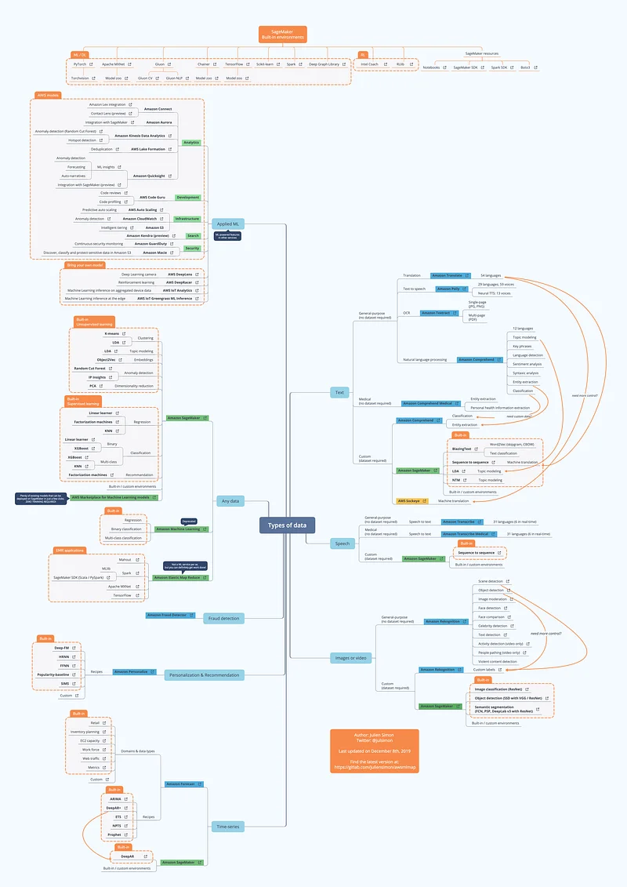
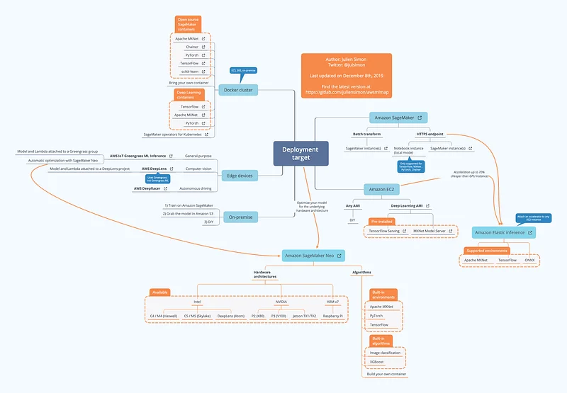

A map for Machine Learning on AWS (December 2019 edition)
About a year ago, I published maps for Machine Learning on AWS, which turned out to be extremely popular. Thanks for the vote of confidence!
AWS re:Invent 2019 is over, and as it brought us quite a few services and features, it was time for me to update them thoroughly.
As before, you’ll find the latest XMind and high-resolution PNG versions on Gitlab: https://github.com/juliensimon/awsmlmap.
Enjoy, and please let me know if I forgot anything.

